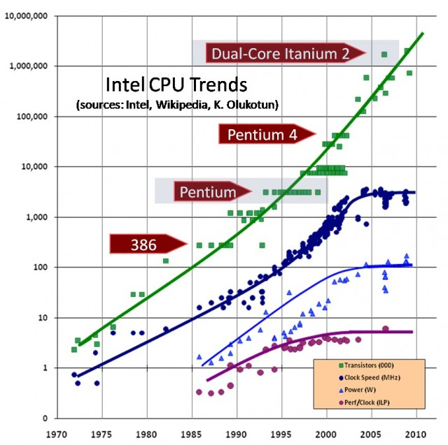
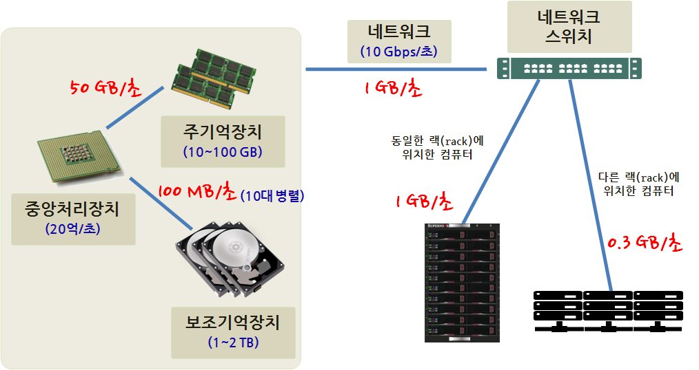
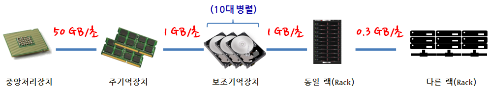
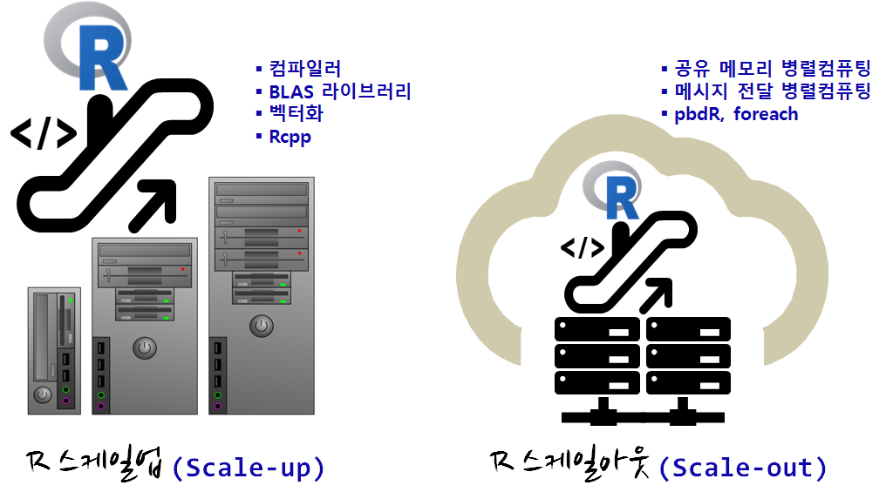

데이터 과학
고성능 R 아키텍처
학습 목표
- R 성능을 높이는 방법을 이해한다.
- R 스케일업, R 스케일아웃 전략을 이해한다.
- R성능향상을 위해 R코드, 컴파일러, 라이브러리, 하드웨어 자원을 최대한 활용한다.
1. 고성능 R 추진 전략
무어의 법칙에 따라 R 코드를 그대로 두어도 성능이 자동으로 향상되는 세상이 수십년동안 지배해왔다. R 스케일업(Scale-up) 전략은 이와 같이 무어의 법칙에 따라 자동으로 성능을 향상시키는 것에 더해서 추가적으로 고성능 하드웨어를 갖추고, 최대한 컴퓨팅 자원을 활용하는 전략으로 최고 성능을 갖는 R기반 제품을 생산해 내는 것이다.
R 스케일아웃(Scale-out) 전략은 더이상 무어의 법칙에 따라 하드웨어 성능이 좋아지는 것이 아니고 코어가 더 많아지고, 더 많은 컴퓨터 자원이 병렬로 이용가능하게 되어 이를 최대한 활용하여 R기반 제품 및 서비스를 개발해 나가는 것이다. 1

2. 통신 계층구조 2
통신 계층구조(Communication Hierarchy)를 고성능 R 시스템을 개발하는데 중요하다. 특히 중앙처리장치에서 출발해서 네크워크로 연결된 다른 컴퓨터의 자원을 활용한 확장성 높은 R시스템을 개발할 때 통신 계층구조를 어떻게 활용하느냐에 따라 고성능이 좌우된다.

중앙처리장치와 주기억장치 사이는 초당 50GB 정보를 주고 받을 수 있지만, 보조기억장치는 다수가 붙을 수 있고 병렬로 10대를 붙여 처리한다면 속도를 초당 1GB 정보를 주고 받을 수 있게 되지만, 주기억장치와 정보를 주고받을 때와 비교하여 50배 느리다. 해당 컴퓨터에서 처리가 불가능해서 외부 네트워크로 연결된 컴퓨터와 정보를 주고 받을 때 클라우드 동일한 랙에 위치한 컴퓨터와 정보를 주고 받을 때는 초당 1 GB 정보를 주고 받지만, 다른 랙에 위치한 컴퓨터에는 초당 0.3 GB로 정보를 주고받는 속도가 뚝 떨어진다.

중앙처리장치에서 연산처리할 것을 다른 랙에 있는 컴퓨터로 가서 그곳에서 정보를 처리할 경우 초당 성능이 뚝 떨어지는 것을 다시 확연히 알 수 있다.
3. 고성능 R 전략
R 스케일업(Scale-up) 전략은 범용 컴파일러 대신에 인텔 CPU에서 돌아가는 ICC 컴파일러를 사용한다던가, BLAS 라이브러리를 선택한다던가 R코드를 벡터화를 활용하여 작성한다던가, Rcpp를 활용하여 C/C++ 성능을 달성한다던가 하는 방법이 포함된다.
R 스케일아웃(Scale-out) 전략은 공유메모리를 촬용한 멀티코어 중앙처리장치를 최대한 활용하여 병렬로 R코드를 실행시켜 성능향상을 도모한다던가, 다수 컴퓨터를 클러스터로 묶어 메시지 전달 방식을 활용한 병렬컴퓨팅으로 R 성능을 향상시키는 방법이 포함된다.

| 구분 | 병렬처리 R 패키지 |
|---|---|
| 공유 메모리 | foreach, parallel, snow, multicore |
| 메시지 전달 | Rmpi, RHIPE, RHadoop, pbdR |
- 공유 메모리
- multicore: 로컬 컴퓨터에 장착된 모든 코어를
fork()를 사용해서 다수 코어를 활용하는데 윈도우는 지원이 되지 않는다. - snow: Lisp-Stat의 아버지 티어니(Luke Tierney) 교수가 개발한 것으로 로컬 컴퓨터 뿐만 아니라 다수 컴퓨터에도 동작된다.
- parallel:
multicore와snow를 추상화한 것으로 현재 R 기본 팩키지의 일부로 사용된다. - foreach:
for루프를 병렬로 돌릴 수 있는 팩키지, 병렬로 처리하는 작업을 통합하는 목표를 갖고 추진.
- multicore: 로컬 컴퓨터에 장착된 모든 코어를
- 메시지 전달
- Rmpi:
- RHIPE, RHadoop
- pbdR
4. 자동화
R코드를 작성하고 모형을 개발할 환경이 갖추어졌다면, 소스코드 관리, R 팩키지 운영환경, 데이터 저장소도 체계적인 관리가 필요하다. R코드 뿐만아니라 데이터, 툴체인을 갖추고 이를 병렬컴퓨팅 환경에 맞도록 최적의 R 환경을 구축한다.